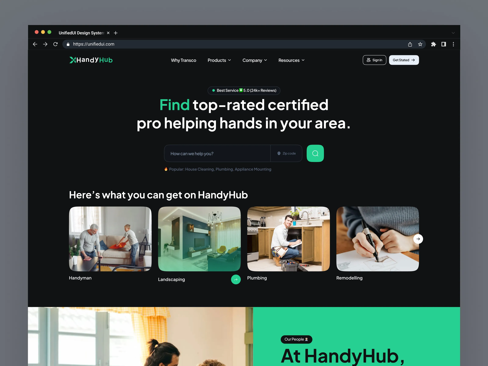
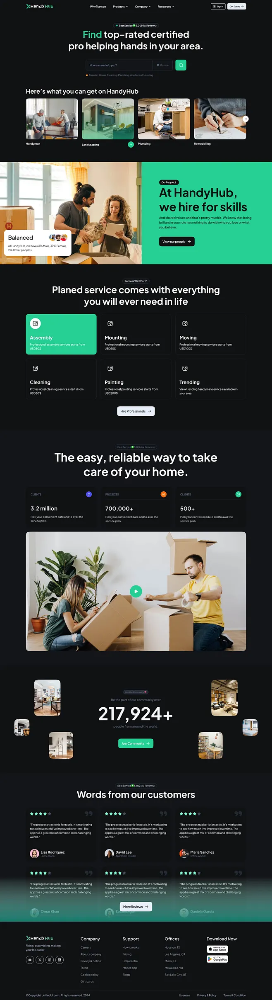
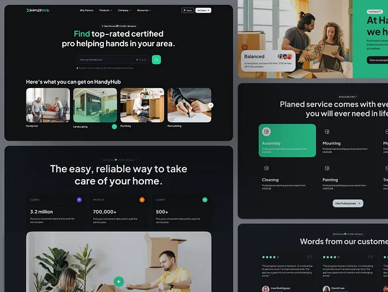

DOABLE · WEBSITE DESIGN REFERENCE · 13 OCTOBER 2026
UnifiedUI Handyman
reference study
Saved visual evidence and an implementation brief for the website redesign. The original concept is by UnifiedUI on Dribbble. This gallery is research material; original art and device/browser mockup frames are not product assets.
Detailed analysis and implementation plan · Proposed Doable tokens · Source provenance
Proposed implementation palette
Colors are visually derived choices, not the original design system. The content hierarchy uses charcoal surfaces, white headings, mint actions, muted text, photographic cards, and a full-width green/photo feature section.
background#101112
surface#151719
surfaceRaised#1b1e20
border#2b3033
text#f4f5f4
muted#a0a8ae
accent#20c997
accentHover#16b487
accentText#071711
Hero and service-card composition

Complete page sequence
Header → search hero → service categories → green/photo introduction → feature grid → media/proposition → community → testimonials → footer. Doable will adapt this sequence to its real features without invented claims.

Additional section composition
